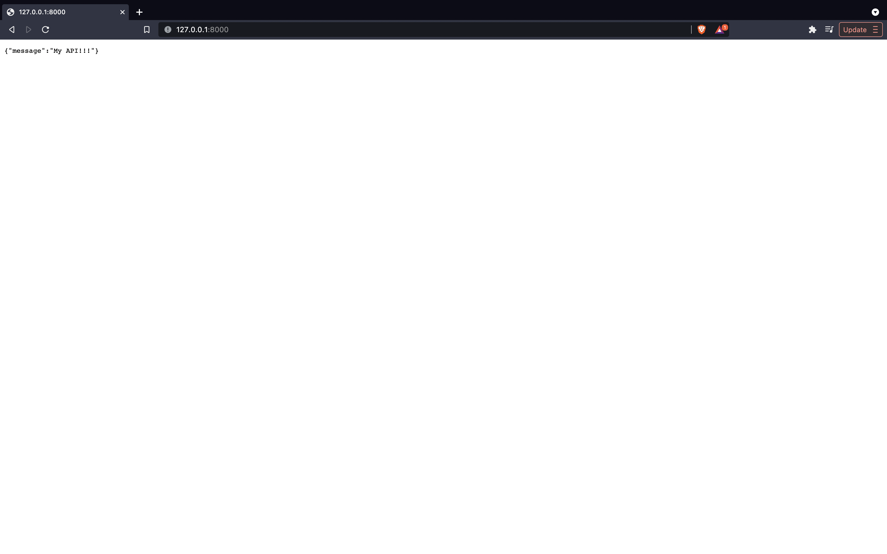
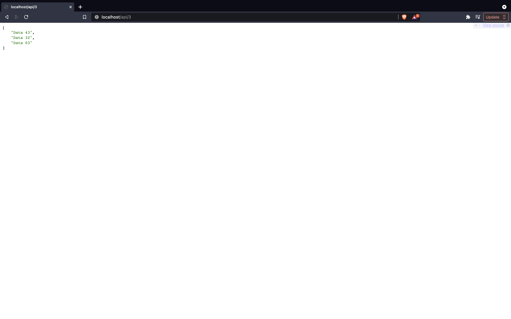

We've all dreamt as little kids about creating APIs. Back in the day during my friends 7th birthday party (total barn-burner by the way), he specifically requested his present to be a RESTful API. He instead got an RC car. CPS was called and the birthday came to an end right quick.
But its 2021! We aren't children anymore. No longer do we have to rely on our parents gifting us an API on our birthdays. We now have the tools to make our own.
Writing an API
***Quick disclamer! The entire project structure is shown lower down in this post. Pathing should match 100%. If you're getting some error, chances are it's probably pathing.
Because our backend is Python, we're going to build our API using FastAPI. FastAPI runs circles around Flask and Django when it comes to runtime and it has built in, interactive API documentation tools (super helpful).
For the sake of simplicity we're going to create a limited API that just makes GET calls. This GET function will require and return n amount of elements from the .csv file. n will be passed in as a parameter by the user, then we'll tell pandas to do the legwork of actually grabbing the data.
Depending on whether or not you use a python version manager, you may need to do a little prep work setting up your environment before running these commands.
$ pip install FastAPI[all]
$ pip install pandas
In our main.py we'll create our FastAPI skeleton.
from fastapi import FastAPI
import pandas as pd
import random
app = FastAPI()
@app.get("/")
async def root():
return {"message": "My API!!!"}
Run FastAPI and load up localhost to check your progress!
$ uvicorn main:app --reload

Now that we have our baseline set up, lets beef up this API and get our data in here. We'll add our .csv to our directory then write our primary GET function below in main.py.
@app.get("/api/{quantity}")
async def generate(quantity: int):
rand_list = list(range(121))
random.shuffle(rand_list)
element_list = list()
data = pd.read_csv("../data/my_data.csv")
for i in range(quantity):
element_list.append(data["Fact"][rand_list[i]])
return facts_list
Let's breakdown this function.
@app.get("/api/{quantity}")
async def generate(quantity: int):
We declare a path parameter in our decorator which allows us to declare and use that parameter in the corresponding function. Because our parameter represents the quantity of requested data elements, we restrict it to an int.
rand_list = list(range(121))
random.shuffle(rand_list)
We run into an issue where we want to grab random elements within the data, but we do not want any repeated elements. A quick and dirty solution to this is to initialize a list of length n where the value at each index is equal to the index, or list[i]=i. Shuffle the list and you've got yourself a random, non-repeating sequence.
element_list = list()
data = pd.read_csv("../data/my_data.csv")
Pretty self explanatory here. Declare the list that'll hold our elements and have pandas physically grab our data. Once again, make sure the path to your .csv file is correct. Also, make sure the .csv is properly formatted and actually readable!
for i in range(quantity):
element_list.append(data["Fact"][rand_list[i]])
return facts_list
Loop n = quantity times, append the element at random index i to element_list, then return element_list. Thankfully the .csv has a simple structure: a list within a dictionary. Many public APIs will not be structured so generously and depending on the API, you may have to loop through lists within dictionaries within dictionaries within lists just to get the required data.
As an example of this, check out https://randomuser.me/api/?results=3.
Everthing should be working now! Make sure your API is running and check out https://localhost:8000/api/3. You should see 3 elements from the .csv returned on the screen.
Our basic project layout should look something like this:
/home/user/Projects/my-fastapi-project
├── app/
│ └── main.py
├── data/
│ └── my_data.csv
├── Dockerfile
└── requirements.txt
Curveball!! Look at your face right now. You must be freaking out about those two new files in there. "What's a Dockerfile and what's the point of requirements.txt?" you may ask. Now that your API is functioning properly, we can host it!
"Where did that Dockerfile and requirements.txt come from??!
Lets host our API! But first, Docker.
Docker allows you to package apps along with their environment conditions/dependencies into a single image which can then be run in a uniform container environment. It builds your image with a set of instructions found in a plain-text file called a Dockerfile. Docker then containerizes that image when it's run. This allows you to write and share applications without having to worry about other peoples' run environments. Docker always ensures it'll run identically to the original.
I hope that wasn't too convoluted of an explanation. If you're still confused, my boy David does a killer job explaining it.
Lets start Dockerizing our app. First let's create requirements.txt and add only a single line: pandas. A quick way of doing this is:
$ echo 'pandas' > requirements.txt
Now lets create and write our Dockerfile. Remember, this is the set of instructions Docker will use to create an image out of our app. Our Dockerfile looks like this:
FROM tiangolo/uvicorn-gunicorn-fastapi:python3.7
COPY requirements.txt /tmp/requirements.txt
RUN pip install --no-cache-dir -r /tmp/requirements.txt
COPY ./app /app
COPY ./data/my_data.csv /data/my_data.csv
Let's line by line this.
FROM tiangolo/uvicorn-gunicorn-fastapi:python3.7
Our wonderful developer project overlords over at FastAPI have already created a FastAPI Docker environment.
COPY requirements.txt /tmp/requirements.txt
RUN pip install --no-cache-dir -r /tmp/requirements.txt
Just like how we used pip to install the FastAPI and pandas frameworks for this project, we have to tell Docker to do the same thing.
COPY ./app /app
COPY ./data/my_data.csv /data/my_data.csv
We now need to tell Docker to copy specific files needed for it to successfully compile our app. The top line copies an entire folder, the bottom one copies only a specific file. In our case, both do the same thing.
I'm assuming you have Docker already installed and ready to go. If not, hurry up! I'll be waiting.
Navigate to the directory with your Dockerfile (should be /home/user/Projects/my-fastapi-project) and build the image.
$ docker build -t my-fastapi-project-image -f Dockerfile .
After the image builds successfully, run it!
$ docker run -d --name my-fastapi-project -p 80:80 my-fastapi-project-image
You have Dockerized an app! The container is now up and running on port 80. Check it out: https://localhost:80.
On to Heroku
Now that we have a Dockerized container, we can use services like Heroku to host our webapp. Once you create a Heroku account we need to install Heroku locally though Homebrew.
$ brew tap heroku/brew && brew install heroku
Now that Heroku is locally installed, login, create a container, then push it!
$ heroku container:login
$ heroku create -a my-fastapi-project
$ heroku container:push web -a my-fastapi-project
Your API is now hosted on my-fastapi-project.herokuapp.com. Congrats.
All of the code for this project can be found on my Github.